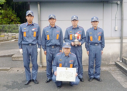

第28回 飯能消防団 消防操法大会のご案内
第28回 飯能消防団 消防操法大会のご案内| 目的 | 消防団員の平素の訓練意欲と士気の高揚に努め、火災防御の基本となる操法技術の練磨、向上を図り、もって消防活動の発展に寄与することを目的とする。 |
| 主催 | 埼玉西部広域事務組合飯能消防団 |
| 日時 | 2012年6月3日(日) 午後0時30分(雨天決行) |
| 会場 | 埼玉西部防災センター屋外訓練場 ※駐車場は宮沢湖駐車場に駐車してください。 |
| 消防操法の種別 | 第1部 小型ポンプ操法 / 第2部 ポンプ車操法 |
◆出場隊
|
|
|
||||||||||||||||||||||||||||||||||||||||||||||||||||||||||||||||||||
今大会では、消防後援会と消友会から新しい優勝杯・準優勝杯・第3位杯が各部門へ贈られました。また、今大会から最優秀選手賞が設定され、ポンプ車5名、小型ポンプ1組4名、小型ポンプ2組4名の計13名に賞状とメダルが授与されました。
◆第28回 飯能消防団消防操法大会 結果発表◆
ポンプ車の部
 第9分団 第9分団 |
第10分団 |
第3位 第5分団 |
| 第4位 第11分団2部 | 第5位 第8分団1部1班 |
小型ポンプの部（1組）
|  | ||
|
第11分団2部 |
第9分団2部 |
第3位 第10分団2部1班 |
| 第4位 第7分団1部 | 第5位 第8分団2部 | 第6位 第5分団2部B | 第7位 第3分団2部 | 第8位 第1分団1部A |
| 第9位 第6分団3部 | 第10位 第6分団1部 | 第11位 第4分団1部 | 第12位 第2分団1部A |
小型ポンプの部（2組）
 |
||
|
第5分団2部A |
第11分団3部 |
第3位 第3分団1部 |
| 第4位 第7分団2部 | 第5位 第9分団3部 | 第6位 第11分団1部 | 第7位 第2分団1部B | 第8位 第8分団1部2班 |
| 第9位 第4分団2部 | 第10位 第10分団2部2班 | 第11位 第1分団1部B | 第12位 第6分団4部 |